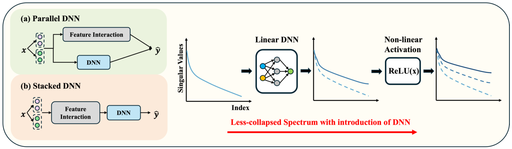
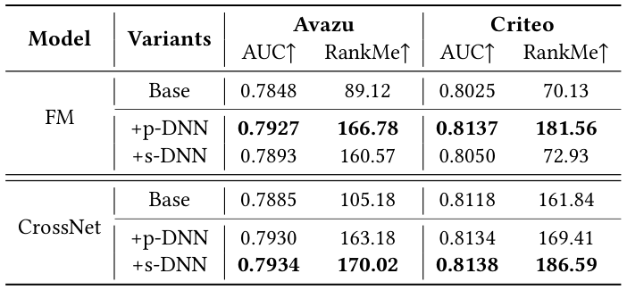
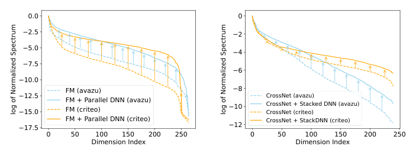
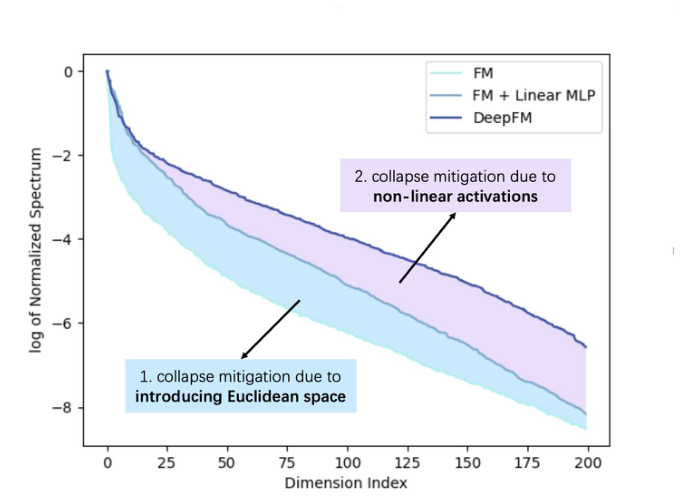

Understanding DNNs in Feature Interaction Models: A Dimensional Collapse Perspective (从维度坍缩视角理解特征交叉模型中的DNN)
- 会议/期刊: SIGIR 2026 (6 pages, short paper)
- 推荐链路定位: 精排 (CTR Prediction / Ranking)
- 研究方向: CTR预估与特征交叉 (主) / 表征学习与维度坍缩分析
- 论文原文: https://arxiv.org/abs/2604.26489v1
- 开源代码: https://github.com/USTC-StarTeam/Dimensional-Collapse-Analysis
TL;DR (核心速览)
本文针对CTR特征交叉模型中DNN作用长期存在争议（"隐式高阶交叉" vs "难以学习点积"）的痛点，提出从嵌入维度坍缩视角重新解释DNN的有效性。作者在Avazu与Criteo上系统实验FM/CrossNet的并行DNN(p-DNN)与堆叠DNN(s-DNN)变体，发现二者均显著展平奇异值谱、提升RankMe（如FM在Avazu上RankMe从89.12升至166.78），并通过基于梯度的理论分析揭示DNN通过引入正交梯度分量与维度感知加权来缓解坍缩。这是一篇分析型短文，不提出新模型，而是提供新的机理解释。
Background & Motivation (背景与动机)
- 领域背景与主流范式: CTR预估中，特征交叉是核心挑战。主流范式分为显式交叉（FM、CrossNet等）与"显式交叉+DNN"混合范式（DeepFM、NFM、DCNv2等）。DNN通常以两种方式集成：与交叉模块并行（p-DNN，如DeepFM）或堆叠在交叉模块输出之上（s-DNN，如NFM）。
- 现有方法局限 (Limitations of Prior Work):
- 作用机理争议：多数工作声称DNN负责"隐式捕获高阶特征交叉"，但已有研究（如MLP难以学习点积、DCNv2发现ReLU-DNN可劣于显式高阶交叉）对该假设提出质疑。
- 缺乏表征层面的解释：DNN为何在经验上有效，其底层原因"insufficiently understood"。
- 维度坍缩未被纳入分析框架：表征学习中维度坍缩（嵌入退化到低维子空间、奇异值快速衰减）已被视为限制表征表达力的关键瓶颈，但尚未被用于解释特征交叉模型中DNN的作用。
- 核心挑战 (Key Challenge): 为什么简单的"增加网络深度/拼接特征"无法解释DNN的收益？因为若DNN仅做隐式交叉，其学习点积的能力本身受限；需要从表征几何（奇异值谱） 与梯度动力学层面寻找新解释。
- 核心洞察与切入点 (Key Insight): 作者观察到纯交叉模型（FM/CrossNet）的嵌入矩阵奇异值谱急剧衰减（严重维度坍缩），而加入DNN后谱显著展平（图1）。由此提出：DNN的有效性部分源于其对表征维度鲁棒性的改善，而非仅隐式高阶交叉。
Problem Formulation & Method (问题定义与方法架构)
1. 符号定义与输入表征 (Notations & Input Representations)
- CTR问题定义为 \(\{X, Y\}\)，\(X\) 为多类别（multi-field categorical）特征集，\(Y\in\{0,1\}\) 为点击标签。
- 每个特征域 \(i\) 的特征映射为嵌入向量 \(v_i \in \mathbb{R}^k\)，\(k\) 为嵌入维度（Avazu \(d=16\)，Criteo \(d=10\)）。
- 特征域集合记为 \(\mathcal{F}_x\)，拼接嵌入为 \(\text{concat}\{v_j\}_{j\in\mathcal{F}_x}\)。
- 模型输出经 sigmoid：\(p=\sigma(\Phi)\)，\(\Phi\) 为 logit，训练用 BCE 损失 \(\mathcal{L}\)。
- 嵌入矩阵 \(Z\in\mathbb{R}^{B\times D}\) 在测试集上收集（\(B\) 为 batch size，\(D\) 为嵌入维度），用于谱分析。
2. 整体流水线 (Overall Architecture)
本文为分析型工作，核心"流水线"是对比两种DNN集成架构并做谱/梯度诊断：
flowchart TD
A["输入层: 多域类别特征 concat{v_j}"] --> B["纯特征交叉骨干: FM / CrossNet"]
A --> C["并行DNN (p-DNN): 线性投影 + 非线性激活"]
B --> D["logit 融合"]
C --> D
B --> E["堆叠DNN (s-DNN): 以交叉输出为输入"]
E --> D
D --> F["Sigmoid 输出点击概率"]
B --> G["诊断: 嵌入矩阵SVD奇异值谱 + RankMe"]
C --> G
E --> G
G --> H["梯度谱分析: 反向传播梯度RankMe与奇异值谱"]图2展示了两种集成结构：(a) 并行DNN接收与交叉模块相同输入并并行运算；(b) 堆叠DNN置于交叉模块之上、以其输出为输入。

3. 核心模块设计与数学原理 (Key Designs & Formulations)
(1) 维度坍缩的评估协议（诊断工具）
- 奇异值谱：对嵌入矩阵 \(Z\) 的协方差矩阵 \(C=\frac{1}{B}\sum_{i=1}^{B}(z_i-\bar{z})(z_i-\bar{z})^T\) 做SVD，得到降序奇异值 \(\sigma=\{\sigma_1,\dots,\sigma_d\}\)。谱快速衰减意味着信息集中于少数维度，即表征坍缩到低维子空间。
- RankMe：矩阵秩的平滑估计，定义为归一化奇异值的Shannon熵： $\(\text{RankMe}(Z)=\exp\left(-\sum_{k=1}^{\min(N,K)} p_k \log p_k\right),\quad p_k=\frac{\sigma_k(Z)}{\|\sigma(Z)\|_1}\)$ RankMe越高表示表征越鲁棒、坍缩越轻。
(2) 组件级消融的公式化（RQ2）
将p-DNN分解为线性MLP与非线性激活，逐步增强FM：
- 仅线性模块： $\(\Phi_{\text{Linear p-DNN}}=\Phi_{FM}+w_{out}\cdot W_{in}\cdot\text{concat}\{v_j\}_{j\in\mathcal{F}_x}\)$
- 完整p-DNN（加非线性激活 \(f(\cdot)\)）： $\(\Phi_{\text{p-DNN}}=\Phi_{FM}+w_{out}\cdot f(W_{in}\cdot\text{concat}\{v_j\}_{j\in\mathcal{F}_x})\)$
物理直觉：线性投影先扩展有效嵌入维度（抬升前150个奇异值，尤其前25个），非线性激活进一步重塑谱（主要抬升索引25–200的中大奇异分量），二者逐步缓解坍缩。
(3) 基于梯度的机理分析（核心理论贡献）
-
纯FM的梯度：\(\Phi_{FM}=\sum_{i<j\in\mathcal{I}_x}\langle v_i\cdot v_j\rangle\)，对 \(v_i\) 的梯度为 $\(\frac{\partial\Phi_{FM}}{\partial v_i}=\sum_{j\in\mathcal{F}_x,j\neq i}v_j\)$ 该梯度严格限制在交互特征嵌入张成的子空间内，与Interaction-Collapse Theory一致，导致表征空间逐步被拉向低秩子空间——这正是谱分析中观察到的坍缩。
-
并行DNN的梯度： $\(\frac{\partial\Phi_{p\text{-}DNN}}{\partial v_i}=\underbrace{\sum_{j\in\mathcal{F}_x,j\neq i}v_j}_{\text{FM梯度}}+\underbrace{g_{DNN}(v_i;\mathcal{F}_x)}_{\text{DNN梯度}}\)$ 其中 \(g_{DNN}(v_i;\mathcal{F}_x)=(w_{out}\cdot D\cdot W_{in})\cdot P_i\)，\(D=\text{diag}(\mathbb{I}(W\cdot\text{concat}\{v_j\}+b>0))\)，\(P_i\) 为从拼接向量中抽取 \(v_i\) 的选择矩阵。关键：\(g_{DNN}\) 引入高度非线性项，提供FM梯度中不存在的正交梯度分量，使嵌入能逃逸低维流形、在更广向量空间中更新。
-
堆叠DNN的梯度： $\(\frac{\partial\Phi_{s\text{-}DNN}}{\partial v_i}=g_{DNN}\cdot\sum_{j\in\mathcal{F}_x,j\neq i}\text{diag}(v_j)\)$ 其中 \(g_{DNN}=w_{out}\cdot\text{diag}(\mathbb{I}(W_{in}\cdot\Phi_{FM}+b>0))\cdot W_{in}\)。\(g_{DNN}\) 作为维度感知的加权向量，用各维不同的非线性信号调制梯度每一维，解耦维度依赖，防止各维收敛到低秩子空间主导的方向，从而保持维度多样性、产生更平坦的谱。
4. 训练目标、负采样与推理复杂度 (Optimization, Negative Sampling & Complexity)
- 损失函数: 标准BCE损失 \(\mathcal{L}\)（CTR二分类），无额外正则项或对比损失；本文不引入新训练目标。
- 训练负采样策略: 不适用——CTR预估为逐样本二分类（点击/未点击标签），非召回式负采样任务；原文未涉及负采样设计。
- 时间与空间复杂度: 原文未报告具体训练/推理耗时或显存开销。方法层面，p-DNN与s-DNN均为标准MLP，复杂度与既有DeepFM/NFM/DCNv2一致；本文主要开销在于离线诊断（对测试集5万样本做SVD与RankMe计算）。原文未报告在线推理延迟。
Experimental Setup & Evaluation Protocol (实验设置与评估协议)
- 数据集统计与预处理: 使用两个公开CTR数据集Avazu与Criteo。原文未报告用户数/物品数/交互数/稀疏度等详细统计量（CTR数据集为多域类别特征，非用户-物品交互矩阵形式），故下表仅列原文明确信息：
| 数据集 (Dataset) | 用户数 (#Users) | 物品数 (#Items) | 交互数 (#Interactions) | 稀疏度/密度 (Sparsity) | 模态/辅助特征说明 |
|---|---|---|---|---|---|
| Avazu | 原文未报告 | 原文未报告 | 原文未报告 | 原文未报告 | 多域类别特征；嵌入维度 \(d=16\) |
| Criteo | 原文未报告 | 原文未报告 | 原文未报告 | 原文未报告 | 多域类别特征；嵌入维度 \(d=10\) |
- 数据划分方式 (Splitting Strategy): 原文未明确说明训练/验证/测试划分细节（仅提及在验证集上随机采集50000样本做谱分析）。依FuxiCTR基准惯例推测为按时间或比例划分，但原文未报告，存在信息缺失。
- 排名评测协议 (Ranking Protocol): 不适用——CTR预估采用逐样本AUC评估，非全库排序或采样排序协议。
- 评价指标与显著性检验: 采用 AUC（预测性能）与 RankMe（维度坍缩程度）。嵌入维度 \(d\)：Avazu为16、Criteo为10。DNN配置：Avazu上p-DNN为4层MLP、2000隐藏单元；s-DNN为3层MLP、400单元。所有配置严格遵循FuxiCTR推荐的最优设置。原文未报告多随机种子方差或配对显著性检验。
Key Experimental Results (核心实验结果)
1. 主实验对比 (Main Results)
表1报告了在FM与CrossNet上集成p-DNN/s-DNN的AUC与RankMe：

| 数据集 | 指标 | FM (Base) | FM+p-DNN | FM+s-DNN | CrossNet (Base) | CrossNet+p-DNN | CrossNet+s-DNN |
|---|---|---|---|---|---|---|---|
| Avazu | AUC↑ | 0.7848 | 0.7927 | 0.7893 | 0.7885 | 0.7930 | 0.7934 |
| Avazu | RankMe↑ | 89.12 | 166.78 | 160.57 | 105.18 | 163.18 | 170.02 |
| Criteo | AUC↑ | 0.8025 | 0.8137 | 0.8050 | 0.8118 | 0.8134 | 0.8138 |
| Criteo | RankMe↑ | 70.13 | 181.56 | 72.93 | 161.84 | 169.41 | 186.59 |
关键观察： - 加入DNN后AUC在两个数据集上一致提升；p-DNN在FM上AUC更高，s-DNN在CrossNet上更优，与既有基准（DeepFM、DCNv2）结论一致。 - RankMe提升显著：FM在Avazu上从89.12升至166.78（p-DNN）与160.57（s-DNN）；Criteo上p-DNN使FM的RankMe提升158%，将模型从低秩状态"救出"。 - 谱可视化（图1）显示纯FM/CrossNet谱急剧衰减，加入p-DNN或s-DNN后谱显著展平，前260个索引的归一化奇异值一致更高；p-DNN在Avazu上平均提升约 \(10^5\)、Criteo上约 \(10^3\)（原文表述）。

2. 消融实验与控制变量分析 (Ablation Study)
组件级消融（图3，以FM+p-DNN为例）： - 仅引入线性DNN：前150个奇异值显著抬升，尤其前25个分量增益最明显，说明线性投影单独即可扩展有效嵌入维度、部分缓解坍缩。 - 进一步加入非线性激活：相对线性DNN，奇异值在索引25–200区间被一致抬升，增强中-大奇异分量的表达力。 - 结论：线性投影与非线性激活逐步、互补地缓解维度坍缩。

控制变量说明：原文未明确报告参数量对齐或图拓扑度数匹配等控制变量消融；消融为"逐步增强"式（FM → FM+线性DNN → FM+完整p-DNN），属于结构递进对照而非严格参数量对齐。
3. 稀疏度/冷启动分桶与超参敏感度 (Sparsity Buckets & Hyperparameters)
- 用户/物品交互频次分桶表现: 原文未报告长尾/冷启动分桶实验（CTR数据集非交互矩阵形式，不适用该分析）。
- 关键超参数敏感度: 原文未报告温度系数、损失权重、层数或码本大小的敏感度分析；嵌入维度固定为Avazu \(d=16\)、Criteo \(d=10\)，DNN层数与隐藏单元按FuxiCTR最优配置设定，未做扫描。
-
梯度实证分析（图4）: 在Avazu上追踪训练过程中反向传播梯度的RankMe与奇异值谱。FM的梯度RankMe最低且近乎平稳，梯度更新高度集中于前30个奇异分量；s-DNN通过维度加权部分缓解约束；p-DNN最显著地提升RankMe并抬升所有维度奇异值，使模型在更广嵌入空间中优化。
-
线上 A/B 测试结果: 原文仅包含离线实验，无线上A/B测试。
Highlights, Limitations & Critiques (亮点、局限与审稿级批判)
- 核心亮点与可迁移性:
- 视角新颖：首次从维度坍缩角度解释特征交叉模型中DNN的作用，将表征学习中的坍缩理论引入CTR领域，提供了"隐式高阶交叉"之外的第二解释。
- 诊断工具可迁移：奇异值谱+RankMe+梯度谱分析构成一套轻量、通用的表征诊断流程，可直接迁移到其他推荐模型（如序列模型、图推荐）的嵌入健康度监测。
- 理论-实证闭环：梯度推导（正交分量、维度感知加权）与梯度谱实证（图4）相互印证，逻辑自洽。
-
工程友好：结论不改变模型结构，仅提供理解与诊断，落地零成本。
-
局限性与审稿视角批判 (Critical Limitations):
- 分析范围偏窄：仅覆盖FM与CrossNet两个骨干、Avazu/Criteo两个数据集，未涉及更复杂的工业模型（如DIN、AutoInt、DCNv3）或更大规模数据，结论的普适性有待验证。
- 因果性存疑：观察到"DNN→谱展平→AUC提升"的相关性，但未做严格因果隔离（如控制参数量、固定谱后比较AUC），无法排除DNN收益部分来自其他因素（如额外容量、正则效应）。
- 评估协议信息缺失：数据划分、随机种子方差、显著性检验均未报告，削弱实验严谨度；作为6页短文，实验深度受限。
- 理论分析的简化：梯度分析基于单样本、单层ReLU的简化推导，未讨论多层堆叠、BatchNorm、Dropout等实际组件对梯度谱的影响；"正交梯度分量"的定量刻画不足。
- 缺乏与坍缩缓解方法的对比：未与显式正则化（如谱正则、对比学习去坍缩）方法对比，难以说明DNN作为"隐式去坍缩器"的相对效率。
- 实用指导有限：未给出"如何设计DNN以最优缓解坍缩"的可操作准则（如层数/宽度与谱展平的定量关系）。
Rating (四维评分)
- 方法创新性 (Novelty): ⭐⭐⭐⭐ （视角新颖，将维度坍缩引入CTR特征交叉解释，但非新模型）
- 评估协议与实验扎实度 (Protocol & Experiments): ⭐⭐⭐ （诊断分析扎实，但数据集/骨干有限，缺方差与显著性检验，划分细节缺失）
- 写作与数学规范度 (Clarity & Rigor): ⭐⭐⭐⭐ （梯度推导清晰、图表直观，6页短文结构紧凑；部分实证表述如"\(10^5\)提升"需谨慎解读）
- 工业落地与复现价值 (Industrial & Practical Value): ⭐⭐⭐⭐ （诊断工具零成本可迁移，代码开源，对理解与监控嵌入健康度有实用价值）